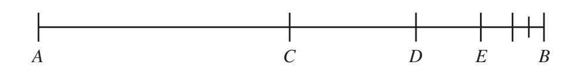
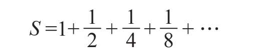
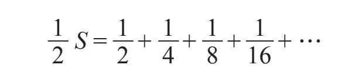
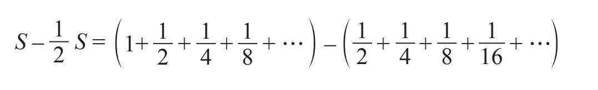
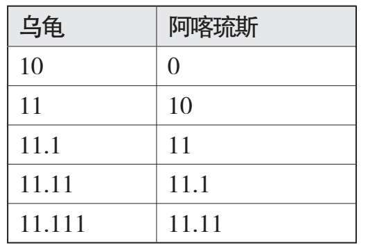
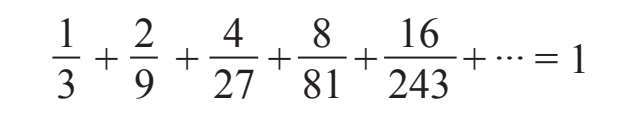

古希腊人对无穷已有很深刻的认识，并颇受其困扰，这在公元前490年左右出生的哲学家、数学家芝诺的著名悖论中得以诠释。他的这些工作完成于公元前450年前后。后人对芝诺的生平知之甚少。他一生的大部分时间应该是在家乡埃利亚度过的，虽然柏拉图在他的著作《巴门尼德篇》中告诉我们：在雅典曾有一次神秘的会面，与会者包括芝诺、巴门尼德和年轻的苏格拉底。
芝诺的著作没有流传下来，大多数的学者都是依赖亚里士多德的著作《物理学》来了解芝诺悖论的。
芝诺将他的悖论建立在他的老师、朋友巴门尼德的哲学理论之上，所以在我们学习芝诺悖论之前，让我们先了解一下巴门尼德和他不寻常的哲学。
巴门尼德的哲学理论
芝诺的老师、朋友巴门尼德的哲学思想不仅在希腊哲学中，而且在整个西方哲学史上都被认为是一种特殊的存在。唯一已知的巴门尼德的著作是《论自然》，以诗的形式写成，现只以零碎的形式残存下来。巴门尼德在书中描述了两种现实观——“真理之道”和“意见之道”。在“真理之道”中，他解释说：现实是永恒的、统一的、无穷稠密的，并且不变的。在“意见之道”中，他指出：事物表象和感官臆想是虚假和具有欺骗性的。巴门尼德的哲学理论是，感官世界都是虚妄的；而对于真实世界，人们只有通过严谨的思考才能获知其存在，它是静止的、永恒如初的。他论辩说，现在的和一秒钟前或一年前、十亿年前的真实世界，均处于完全相同的状态，而且将永远如此保持不变。
怎么可能？？巴门尼德的学说即使对他的同行（一位希腊哲学家）来说，听起来也很是怪异。
下面介绍他哲学理论的精髓以及产生的根源。
巴门尼德想寻求一个显而易见的真理，以至于任何人都不可能对其真实性报以怀疑的态度，然后把他所有的哲学都建立在这个不容置疑的真理之上。在数学中，这样的真理被称为公理。经过几天的冥想，巴门尼德沉沉地睡着了，而在他的梦中，智慧女神雅典娜，既是宙斯的女儿，也是雅典城的守护神，入梦帮助他找到了他期盼的东西：那所是者是，所非者不是。
巴门尼德宣称，存在者存在，非存在者不存在。这种论断似乎显而易见，无错可纠。真是这样吗？让我们拭目以待。
从这个公理出发，巴门尼德继续提出了一些新的真理（用数学语言来描述，这些被称为定理）。最先提出来的是巴门尼德第一定理：存在（那所是者）是非生非灭的。
这个定理的证明几乎是显见的，可以用数学中的“反证法”给予证明：我们假设其对立面成立，即“存在”是在某个点上被创造出来的，然后检验它是否导致了逻辑上的矛盾。如果逻辑上出现矛盾，那这就意味着最初的假设是错误的，进而命题得证。
如果“存在（那所是者）”是被创造出来的，那么它一定是由“那所是者”或者“那所非者”之一创造出来的。可没有什么能从“那所非者”创造出来，因为那根本不存在。但如果“存在（那所是者）”是由“那所是者”创造出来的，那就意味着“存在（那所是者）”早已经存在了。因此，“存在（那所是者）”并非是在某个时刻被创造出来的产物。
证毕。
“存在（那所是者）”永远不会消亡的证明类似，我将之留给聪慧的读者们。
巴门尼德提出的下一个命题是巴门尼德第二定理：所有的存在都是一致的、无穷稠密不可分的。
这一定理的证明方法亦是简单得令人咋舌。巴门尼德认为，“存在”一定是无穷稠密不可分的，因为如若不然，就意味着它的内部或多或少含有“不存在的东西”。但是“不存在的东西”根本不存在。巴门尼德的“所非者不是”这一观点，一次又一次地被解释为他对虚无存在性的否定。虚无即“所非者”，因而并不存在。
同样，所有的“存在”都必须是无差别一致稠密的，因为如果某种“存在”比另一种“存在”稀疏些，那就意味着前者含有更多“不存在的东西”。但是“不存在的东西”根本不存在！
再次，证毕。
事情开始变得古怪了吗？让我们再看看巴门尼德更惊人的理论——蛋糕上的那颗樱桃是什么吧！
巴门尼德的伟大定理：运动是一种虚幻
这一命题的证明也是显而易见的——如果一切都是无穷稠密的，那么运动怎么可能发生呢？
很少有人否认运动的存在，但这一共识与巴门尼德的哲学毫不相干。他对存在错误可能的感官与意见的世界毫无兴趣。在他的真理世界（一个由公理和定理构成的世界）里，一切都是永恒不变的，非生非灭的。
悖论一：二分法或运动幻觉
回到芝诺。他写的那本书，显然是用来为他导师的哲学理论作辩护的。特别是他想证实巴门尼德关于运动不可能性的主张，也正是这一主张使巴门尼德遭受广泛非议，甚至被称为最荒谬的理论。（事实上，否定运动的存在性确实是一件极其诡异的事情。）
作为为导师辩护的一部分，他在书中介绍了他的几个著名悖论，这些悖论在2000多年间吸引了无数数学家和哲学家的关注，这其中就包括亚里士多德、迈蒙尼德、笛卡儿、莱布尼茨、斯宾诺莎、柏格森、罗素、刘易斯·卡罗尔、卡夫卡、萨特、黑格尔和列宁（他在黑格尔的书中读到了芝诺的悖论，其后在他的《哲学家的笔记本》一书中写道，这些悖论其实很有趣）。还有大批为芝诺悖论痴迷的名人，这里就不一一陈述了。
那么，这些悖论究竟说了些什么？
第一个悖论叫作“二分法”，这里芝诺用一种极其合情合理且富有逻辑的语言来说明运动是不可能的。
请看下方示意图。芝诺指出，为了从A点走到B点，行走者必须首先通过A点与B点的中点C点。而从C点要走到右端点B，行走者又必须先走完剩下的半程，也就先得经过C点与B点的中点D点。不过，即使到达了D点也别高兴得太早，因为行走者必须再走完剩下的半程，到达D点与B点的中点E点。这个过程无穷进行下去。

芝诺论证：在有限的时间里通过无穷个点，这是不可能的，因此没有人能从A点走到B点。（于是，我们知道了“火车从某地开往目的地需用多少时间”这一问题的答案，即火车永远无法到达目的地。）因为A点与B点的选取是任意的，所以上述论证说明从一处移动到另一处是无法实现的。这也就说明，运动是不可能的。
读者可以在很多书籍上找到阐述破解上述悖论的简单方法。解释大致是这样的：假定移动一个给定距离所需要的时间和距离成正比。下面我们给出证伪上述悖论的具体过程，因为我们能够说明在有限时间内穿过无穷个“半程”（这些“半程”的长度越来越短）是可能并可以做到的。譬如，假定从A点走到C点恰好需要一个时间单位，比如1分钟；那么，行走者需要0.5分钟从C点走到D点（因为C点到D点的距离恰为A点到C点距离的一半），需要0.25分钟从D点走到E点，按这个推算无穷进行下去。我们记从A点到B点走完全程的时间为S，则：

等式两边同时除以2，则有：

两式做差，得到：

整理式子可以得到1/2S=1，即S=2。换言之，一个行走者从A点走到B点需要2分钟时间。
坦白说，我对这个结果并不感到惊奇。因为我们在一开始已经假定从A点到C点所需要的时间为1分钟，而此两点的距离恰为全程的一半，所以读者可以很快发现走完全程需要的时间为2分钟。
对于上述证明，芝诺若是知道了，势必会言辞激烈高声反驳，因为证明之始的假设就几近为我们需要证明的结论。当我们提出，“假定从A点到C点所需时间为1分钟”，其实就已经认定运动是存在的，所以行走者才能从A点走到C点。然而，这个假设其实基本就是我们需要证明的结论，于是证明过程进入循环论证阶段。
此时，芝诺可能会说类似下述的话以明确自己的立场：“基于何种理由？你何以认定自己可以从A点走到C点？显然，你犯了一个巨大的错误，这就像夏日希腊美丽岛屿上的太阳一样清晰。你在从A点到达C点之前，必须走完半程到达X点（A点和C点的中点），然后再走完距离C点剩余的半程，从而经过Y点（X点和C点的中点），以此类推，无穷进行。你肯定清楚，在有限的时间里，不可能通过无穷多个中点。因此从A点走到C点是不可能的，这就与你刚才的假设相悖了。我相信你也能明白从A点到X点也是不可能的，因为类似的，你也必须不断地走完半程，半程的半程，半程的半程的半程，等等。事实是，从任意一点移动到任意另一点都是不可能的。换句话说，任何形式的运动甚至都不可能开始。”
那么，看起来芝诺赢了，不是吗？
你觉得呢？
悖论二：飞毛腿阿喀琉斯与蹒跚的乌龟
芝诺的第二个悖论，似乎也是他最著名的一个悖论，说的是如果在英雄阿喀琉斯与一只小乌龟之间举行一场赛跑，虽然阿喀琉斯是特洛伊战争中的飞毛腿，而参赛的乌龟只是普通的乌龟，并非特别敏捷，但只要让乌龟的起跑线稍稍前于阿喀琉斯的起跑线（即使是非常微小的差距），阿喀琉斯也永远无法赶上乌龟。这听起来是不是非常不合逻辑？下面让我们给巴门尼德的这位得意门生阐述自己观点的权利吧！
芝诺是这样解释的：“当阿喀琉斯到达比赛的起跑线时，他会发现乌龟已经不在那里了。乌龟确实只往前跑了很小一段距离，但是两者的前后位置依然。阿喀琉斯仍然落后于乌龟。”
现在，我们只需要一遍又一遍地重复这个论证过程。每次阿喀琉斯到达乌龟上一个位置，他就会发现乌龟已经离开了并到达前方的另一个位置。虽然乌龟一直以缓慢的速度前行，但阿喀琉斯永远赶不上乌龟。
我认为此刻我们需要停下来，思考一会儿（甚至“两会儿”）芝诺上述论证的正确性。
假设赛道长100米，阿喀琉斯的速度是10米每秒（毕竟他是一位举世闻名的运动健将和勇猛的战士，不是吗），乌龟则以1米每秒的速度拖着腿缓缓向前移动（对乌龟来说，这个速度可能太快了）。为了比赛公平起见，乌龟的起跑线比阿喀琉斯的起跑线领先10米。
我们大家都明了阿喀琉斯会轻松赢得比赛。我们的英雄阿喀琉斯能在短短10秒内跨越这区区100米。反观乌龟，虽然它全程只需要爬行90米，但以每米耗时1秒的速度，它需要90秒才能到达终点。扼要概况一下结局：阿喀琉斯最先抵达终点，接过他的桂冠，向他的粉丝观众们鞠了一个躬，然后耐心地等待对手；而乌龟，大汗淋漓，在濒临崩溃之际，晚了整整80秒才爬到终点。
这个结果看起来毋庸置疑。但是芝诺有完全不同的看法。下面我们来听听芝诺的观点。
当阿喀琉斯到达乌龟的起跑点，即离出发点10米的位置时，他会发现乌龟已经不在那里了，因为它已经蹒跚前行了1米，现在乌龟已经到了离出发点11米的位置。两位选手之间的距离已经从10米缩减到只有1米，但是乌龟仍然领先。
当阿喀琉斯到达距出发点11米的位置时，他会再次发现乌龟并未在原地等他。在阿喀琉斯从10米刻度处跑到11米刻度处的这段时间里，乌龟已经前进了10厘米。（乌龟以阿喀琉斯1/10的速度“奔跑”，所以在阿喀琉斯跑过x距离的时候，乌龟跑了x/10的距离。）
下面这张表显示了两位“选手”同时刻下的各自前进的距离：

从表中的数据我们可以看出，随着赛事的进行，阿喀琉斯与乌龟之间的差距持续减小，但是乌龟始终领先阿喀琉斯少许。更甚者，我们可以发现，阿喀琉斯不仅追不上乌龟，他也永远到达不了12米刻度处。
“胡说八道！”你也许会愤然吼道，“比赛开始2秒后，阿喀琉斯就将跑到距离出发点20米处，远远领先乌龟。”这看起来显而易见，没有任何漏洞。但少安毋躁，不管怎样，让我们再给芝诺一个申辩的机会。
芝诺的辩白
瞧，我想你完全没明白我的意思。我提供了一个如此富有说服力的论证，说明只要乌龟在比赛中被赋予哪怕是最小的优势，阿喀琉斯也将永远无法赶上乌龟。而你是想告诉我，2秒后，阿喀琉斯就会到达距离起跑线20米的位置，进而领先乌龟8米，而乌龟在这个时间里才爬到12米刻度处的位置，对吗？
首先，我没有要求你进行任何的解释，我只是请你指出我论证中的错误。这也正是你未曾做到的。
其次，虽然你行为不妥，但我仍建议综合我们双方的观点来论证。与我俩观点可能都不违背的一个论点是：我们永远无法达到2秒的时刻。我有充分的论据证明这一点。你瞧，为了经历2秒，我们先得经历其一半的时间，也就是说，我们得先达到1秒这一时刻。但在那之前，我们还得经历这1秒的一半，而在这半秒之前，我们得经历这半秒的一半（也就是1/4秒），然后，是剩下时间的一半，然后一半的一半，一半的一半的一半……
我们没有办法经历无穷多个半时刻。因此，时间不会过去，也就是说，它根本不存在。你只是过于沉浸在虚妄的感官世界里而已。
现在，请注意，我不相信阅读行为——这是感官世界中另一个普遍存在的幻觉。但是不管怎样，我读到了下面几行略有意义的话语：
时间不流逝，
我们却会消逝。是的，是我们。
我们不曾浪费任何时间，
而时间消磨了我们。
如果我们再继续谈论书籍，我知道有一个人撰写了不少书，更是阅读了海量的书，他曾出色地为我的论断辩护。
他的名字叫伯特兰·罗素，是一位英国哲学家和数学家。（当然，我知道罗素生活在我逝世2000多年后，但是……）
罗素被公认为是20世纪最伟大的思想家之一，他对我给出的阿喀琉斯与乌龟赛跑的悖论有独到的见解（顺便提一句，时间也消磨了罗素）。罗素在他的论文《数学与形而上学》中，写下了这个悖论的一种变形，并给我冠以“无穷理论哲学之父”的头衔。尽管我有怀疑一切的习惯，也拥有怀疑一切的能力，但我相信这个头衔足以令人印象深刻。
有人说罗素变形后的悖论版本比我原来的版本更精妙，而且不容易反驳。我不认为（对于相同的悖论来说）仅比较不同版本的优劣是公平的——罗素只是“站在我的肩膀上”想出了他的版本。站在父亲的肩膀上，并不会使孩子比父亲更高。尽管如此，我确实相信：我们的悖论不是不容易证伪，而是根本无法被证伪的。
罗素是这么陈述的：“设想乌龟在阿喀琉斯前方少许起跑。在任一时刻，乌龟和阿喀琉斯都会到达某一个确定的点，且在比赛过程中，他俩都不会经过任何一个位置两次。乌龟跑过了多少个位置，阿喀琉斯也跑过同样多的位置，因为每个选手都在一个特定的瞬间在一个特定的地方，在另一个瞬间在另一个地方。然而，为了让阿喀琉斯超越乌龟，必须满足这样一个条件，即乌龟跑过的位置，将只是阿喀琉斯跑过的那些位置的一部分，毕竟乌龟一开始的起跑线就已领先少许。”
现在请注意了。罗素的版本只有在你忽略掉以下公理情况下才能被证伪，即部分总是小于整体：阿喀琉斯只跑过乌龟经过的某一些位置。怎样，你还不想放弃吗？罗素指出，相信这个公理的人也必然同意：阿喀琉斯，即使他跑得比乌龟快10倍，1000倍，甚至100万倍，只要乌龟在一开始就获得1米，或1厘米，或甚至只是1毫米的优势，阿喀琉斯就永远赶不上乌龟。
这是怎么回事呢？你跟上我的思路了吗？我可以告诉你，在乌龟和阿喀琉斯比赛的跑道上，有无穷多个位置点。也许，正是因为我们谈论的是无穷，我们习以为常的规则已失去了其有效性。顺便说一句，如果你还记得我的第一个悖论的话，那么整个争论都毫无意义。阿喀琉斯与乌龟甚至不能开始比赛——因为运动是不可能的。之所以做上述论证，我只是想友善地允许你做这些奇怪的假设。你甚至连让两位选手跑起来都做不到。你连发令枪都打不了。因为，为了能够扣动扳机，你的手指必须先移动与扳机之间距离的一半，然后再移动剩下的一半距离，再一半的一半……持续不断的半程下去，永无止境。
有一次我约了我伟大的导师巴门尼德会面，我却迟到了。我跟他解释说，我之所以迟到，是因为我要走过无穷多个半程点，才能走到美丽的海伦娜酒馆，与导师会面。我们都震惊于我的到来，而那一刻我们竟然正在友好地交谈。
说实话，我也不知道我为什么要不厌其烦地向你解释我的观点。正如哲学家老子所言：“知者不言，言者不知。”我当属知者，所以我将言尽于此（如果可以的话）。
悖论三：飞矢不动
在芝诺的第三个悖论中，他“证明”了，因为每一个时刻都不能被再分割，所以脱弦飞出的箭矢将在任何时刻都处于静止不动的状态。（因为如果箭在任何给定的时刻是运动前进的，这将意味着这一时刻是可被再分割的。）
现在假设时间是由一系列的时刻组成的，并且箭矢在任一特定的时刻都是静止的，那么我们必然将得出结论：箭矢永远处于静止状态，因此它永远不会移动出一段距离（此处，芝诺再次让我们震惊于他卓诡不伦，我们必须准备好面对他的奇思妙想）。
在我们选定的任何时刻，箭矢必然是静止的。那么，所有这些静止不动的状态又是如何叠加出运动的箭矢呢？如果箭矢在每个瞬间移动的距离都等于零，那么所有这些零加起来又怎么可能是一个正数，箭矢又是如何飞行的呢？
这个问题并不寻常！
直到今天，这个悖论仍未完全解决；也就是说，没有一个解决方案能被所有的物理学家和数学家接受。
加朵女士的优美步态
让我们来看看这个悖论的另一个版本。设想神奇女侠的扮演者盖尔·加朵女士走在特拉维夫的罗斯柴尔德大道上。如果我说有成群的人在跟拍这位美丽的女士，并从各个角度拍摄她的照片，应该没有人会感到丝毫惊讶。不一会儿，图片分享社交应用平台上就“堆”满了数百张她的照片。在所有照片中，这位娇美的女士都在固定的位置上；也就是说，她处于静止不动的状态。这就是摄影的本质：它捕捉住了一个特殊的瞬间，并让之得以永恒。如果拍摄的画面中有什么东西看起来像在移动，那你最好把旧相机换成新款，或者仔细阅读说明书，以找到提高相机快门响应速度的方法。
因为我们可以在每一个瞬间为盖尔拍摄照片，所以她在大道上行走的每一刻都处于一种静止的状态。我们不得不问：如果她总是处于静止不动的状态，那么她到底是什么时候在行走呢？为什么在这一连串的静止不动之后却得到了运动的结果呢？再一次，我们回到了与上面同样的问题。一样的，答案还未知。
再论芝诺的悖论
童年记忆——几何课上的芝诺
（前苏格拉底时代与后苏格拉底时代的对话）
泽利亚老师：孩子们，你们都记得，过任意（不同的）两点有且仅有一条直线。
芝诺：不！不存在一条能过给定任意两点的直线，因为从任何一点运动到另一点是不可能的。我已经无数遍地阐述这个观点了。我也不明白你为什么抵触我关于从马格拉到雅典航行问题的绝妙解释——尽管距离很短，但是到达目的地需要花费无穷的时间。这也就是说，永远不可能到达目的地。你根本无法跳出一般思考模式的禁锢。
泽利亚老师：芝诺，你为一些简单直白、显而易见的事情争论不休，把所有事情都复杂化了。
芝诺：没有任何事情是简单明了的。
泽利亚老师：这话你又是针对什么而言？
芝诺：上节课，您教我们说，一条直线是由无穷多的点组成的，是不是？
泽利亚老师：是的，非常正确。
芝诺：您是不是也提及，单点的长度为零？
泽利亚老师：当然。因为如果单点的长度为某一正数，那么这个单点就可以被分割得更小，这与我们的基本假设相悖。或者说，一旦单点长度大于零，就是一条线，而非一个点。又或者说，因为任意（不同的）两点间总存在第三个点，所以单点不可能长度大于零。这是由于一旦一个点的长度大于零，那么任何长度小于这个数值的线段都不可能通过这个点。这与几何学的基本逻辑相矛盾。
芝诺：那好。您无须给出这么多佐证。我也同意单点的长度为零。我现在想问您一个小问题：既然每个单点的长度为零，那么它们又是如何组成一条长度大于零的线段的，比如长度为17厘米的线段？早在一年级的时候，我们就学习过，任意多个零的和还是零。所以，我再复述一遍我的问题：一组长度为零的点，是如何组成一条长度为17厘米的线段的？我期待这一问题的答案与解释。
泽利亚老师：我需要好好想想这个问题。我将在下节课给你答复。
芝诺：不急，我可以等。我还有一个问题，也许这个问题能帮您解决上一个问题。一个正方形是由无穷多条线段组成的，而每一条线段的面积为零。那么，这些线段何以填满一个面积大于零的正方形呢？也许您应该去找物理老师泽洛特讨论一下，用他所能理解的语言问他，设想一个箭矢在t=0时刻位于s=0的初始位置，它是怎么可能从一个地方飞到另一个地方的呢？在任意给定的时刻，箭矢的移动距离均为零，这不假吧？人们可以拍摄箭矢的运动轨迹，当然，我知道现在我们还不会拍照，但无妨。请注意，在任何给定的时刻，箭矢都处于静止不动的状态，那么它们何以产生正距离的移动？难道时间不是由这些时刻组成的吗？又或许，如果有足够多的零，它们之和就有可能不为零？不管怎样，我打算用弹弓来检测验证我的理论。
（此时，下课铃声响起。所有的学生都欣喜若狂地从教室“奔逃”到了校园操场。老师也很快回到教员室，呷了一口大茴香酒，放松一下。只有芝诺留在教室里，仍思考着箭矢啊、弹弓啊，以及比著名的飞毛腿英雄跑得还快的乌龟。不管怎样，他很清楚自己不可能真的离开教室，因为他首先得走完全程的一半距离，然后是一半的一半……）
亨利·路易斯·柏格森（1859-1941）是一位犹太裔法国哲学家，他的工作对20世纪上半叶的哲学思想产生了重大影响。他坚信人类的大脑无法接受芝诺的那些悖论，未来也必将如此。柏格森认为，唯一能做的就是想出一个切实可行的方法来解答这些问题。然而其他一些法国人，他们对芝诺和他的悖论并没有多少兴致。譬如，亨利·庞加莱（1854-1912），一位伟大的数学家、理论物理学家及科学哲学家，他曾经说过：
芝诺是个白痴，只有白痴才能解决他的悖论。
英国的伯特兰·罗素不同意几位法国哲学家的观点，他在自己的《数学原理》一书中写道：“芝诺的悖论是‘无穷微妙和深刻的’。”
庞加莱猜想与佩雷尔曼拒奖
庞加莱猜想是2000年克雷数学研究所提出的千禧年七大公开问题之一。截至写作本书的这段时间，庞加莱猜想是七大难题中唯一被解决了的问题。
最终破解这个难题的是犹太裔俄罗斯数学家格里戈里·佩雷尔曼（出生于1966年）。因为这项成就，佩雷尔曼本应该被授予菲尔兹奖，并获得克雷数学研究所提供的奖金为100万美元的千禧年数学大奖。此处，我用“本应该”一词，是因为佩雷尔曼拒绝了这个奖项。他为此解释道：“我对金钱和荣誉毫无兴趣。我认为证明的正确性才是唯一重要的事情。”[1]他甚至至今仍未将他的证明公开发表在任何同行评价的杂志上，而已有其他数学家对他在预印本文献库上发表的文章进行检索并引用。
实际上，佩雷尔曼在他的学术生涯中曾多次拒绝荣誉或奖项。他拒绝接受欧洲数学学会颁发的杰出青年数学家奖，因为他认为颁发奖项的人并不能真正理解或赏识他的工作。
37岁时，佩雷尔曼辞掉了数学研究所的工作。如今，他待业在家，与母亲隐居在圣彼得堡。
从芝诺到牛顿，从伽利略到佩雷尔曼，这些伟大的数学家在很大程度上不同于常人。也许这也正是他们能成为数学巨匠的原因。
下面让我们回到之前的话题。
故事时间——阿喀琉斯被淘汰
阿喀琉斯输给乌龟之后，他决定开始一个强化训练计划。阿喀琉斯来到了奥林匹克体育场，绘制了一条跑步训练路线——从某个A点跑到B点。但此时，无穷多位神灵决定前来捣乱。第一位神计划阻止阿喀琉斯跑完前半程，第二位神计划阻止阿喀琉斯跑完1/4的路程，第三位神……1/8的路程，……。
动动脑筋
设想这些神灵可以为所欲为，那么阿喀琉斯就不可能往前跑出哪怕一步。
动动脑筋续篇
如果你的结论是阿喀琉斯甚至都无法运动，那么理由何在呢？只要阿喀琉斯站在起跑线上，那么就没有任何一个神灵可以来阻挠他。这么说来，又是什么或是谁阻止了这位（几乎）无敌的战神前进呢？[2]
间歇跑竞赛
想象一下，若我们在阿喀琉斯与乌龟的比赛中做一个小小的改动。每次阿喀琉斯到达乌龟上一时刻所处的位置时，两位选手都停下来休息一分钟（我想乌龟其实亟须休息）。在此规则下，阿喀琉斯在无穷多分钟后才能追上乌龟，也就是说阿喀琉斯永远无法追上乌龟。
英雄陨落
间歇跑竞赛的第二天，极度伤心失望的阿喀琉斯决定，无论如何他还是得坚持训练。他计划在下午2点钟开始锻炼。下午1点59分时，阿喀琉斯到达了体育场。此时奥林匹斯山上的诸神正准备他们神圣的午休，他们被阿喀琉斯制造出来的喧嚣声打扰，怒不可遏的诸神决定用一只毒箭射击阿喀琉斯的脚踵，这也是他身上唯一的软肋，以结束阿喀琉斯的生命。第一位神灵计划在下午2点过半分钟（1/2分）时射杀阿喀琉斯，第二位神灵计划在另一个时间——2点过（1/4分）时射杀他，第三位神灵计划在2点过1/8分钟时做这件卑鄙的事情，依此类推。
下午2点过1分钟时，阿喀琉斯倒在了地上——英雄陨落，他的脚后跟上插着无数根毒箭。然而，他的死无法归咎于任何一位神灵。每一位参与的神灵都有一个完美的、一致的借口：“当我向阿喀琉斯射箭的时候，已经有无穷支箭射进了他的脚踵，那时阿喀琉斯早已死亡。我承认射杀尸体不是一件好事，但这和控诉我谋杀还有很大差距。”
现在，我们不得不问，到底是谁射杀了阿喀琉斯？又是在何时？
太空中的数学
读者可能已经注意到，一旦我们开始涉及诸如零和无穷大这样的概念，许多平日里看似“正常”的定律就都不再适用了。下面我将给读者介绍一个著名的思想实验，叫作“宇宙飞船”。
试想一下，如果一艘宇宙飞船按照以下规则飞行，会发生什么情况：在最初的半小时内，飞船以每小时2千米的速度飞行（对于宇宙飞船来说，这个速度确实相当慢）。下一个一刻钟内，飞船稍微提速一点——每小时4千米。在接下来的1/8小时里，飞船以每小时8千米的速度飞行，以此类推。试问，一小时后飞船会到了哪里？
计算并不复杂。在开始的半小时里，飞船以每小时2千米的速度飞行，将飞出1千米的距离。在接下来的一刻钟里，飞船以每小时4千米的速度飞行，也将飞出1千米的距离。然后继续下去：下一个一千米，再一千米，又一千米……显而易见，飞船飞行的距离是一个求和式：1+1+1+…。但是，此式中我们需要对无穷多个1求和，也就是说这个结果是无穷大。那么宇宙飞船最后停在哪儿了呢？貌似它无处可待，因为它飞到的位置，将离出发点有无穷大的距离。设想如果飞船最后停在宇宙中某一个位置，那么这个位置与飞船的出发点间就有一个确定的距离，这个距离就不能是无穷大。所以飞船到底去哪儿了呢？无人得知。至今人们还在搜寻这艘飞船。
无穷大并不存在于直线之上。
——乔治·黑格尔
口算证明
下面我们口算证明下面的和式：

《项狄传》（谨以此献给阿喀琉斯，纪念逝去的英雄）
我读过的最为疯狂、最为离奇的故事之一，是18世纪出生于爱尔兰的英国作家劳伦斯·斯特恩写的《绅士特里斯特拉姆·项狄的生平和见解》（简称《项狄传》），此书于1759年至1766年陆续出版，共9卷。
从书名可以大致猜测，书中的主人公将向读者展示其翔实的人生故事以及其深刻的思想和见解，但事实并非你所料想。
此书共分9卷，书中一件极其荒诞的事情是，主人公生活中的任何事情都不能简单地被描述清楚，因为每一件与该事情哪怕只有一点点关联的小事都必须被讲述出来。直到书的第三卷，读者才盼来了主人公出生的那一刻。
项狄抱怨说，向大家描述他生平某一天的经历就需要整整一年的时间。伯特兰·罗素曾指出，如果这位先生能活无数天，那么他将不会再有任何困难来讲述完他一生的故事。这是真的吗？一方面，他生命中的每一天都终将在某个时间被讲述出来，他可以在1万岁那一年叙述他第一万天的经历。另一方面，每过一天，他现实生活的时间就比书中描述的生活的时间又多了近一年。这个过程呈现给我们一个类似于阿喀琉斯与乌龟赛跑的模式，阿喀琉斯跑了一年，乌龟只跑了一天，但是因为他们有无穷的时间可以支配，乌龟最终会到达阿喀琉斯所到达的每一个地方。
无穷与超越：永无止境的旅程
从远古时代开始，没有任何问题能像无穷那样深深地触动人的情感。显然，别的概念都不如无穷能如此激励人们运用理智产生富有成果的思想，然而也正是因为这个原因，它比其他任何概念都更需要加以阐明。这是20世纪伟大的数学家大卫·希尔伯特（1862-1943）在他题目为《论无穷》的讲演中所说的。如果你仔细阅读手中这本书的第一部分，你会发现“无穷”确实是颗闪耀的明星——数字王国是一个无穷的王国，许多甚至大多数谜题和玄妙的知识，直接或间接地与无穷这一概念相关。
数学是无穷的科学。
——赫尔曼·外尔
[1]2010年3月23日，慈善组织“温暖之家”在网上的公开信中要求佩雷尔曼把奖金捐赠给他们。克雷数学研究所随后用佩雷尔曼的奖金设立了“庞加莱讲座教席”，这是巴黎庞加莱研究所为年轻有前途的杰出数学家设置的短期访问职位。
[2]我在何塞·贝纳德的《无穷》一书中发现此例。